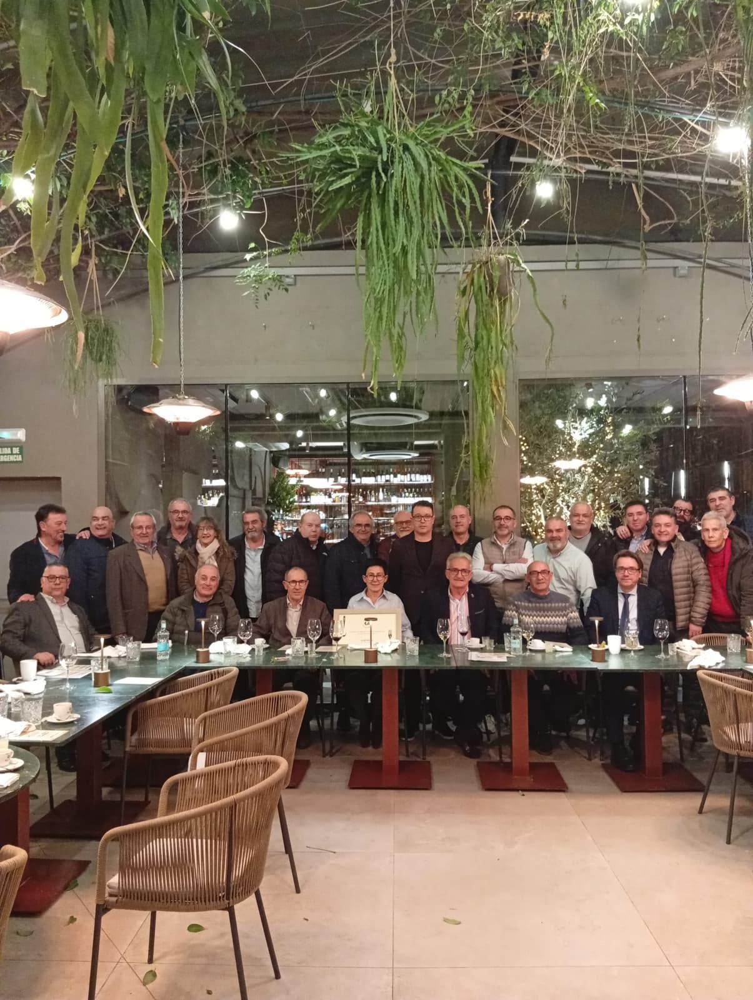

La Asociación
Cenamos juntos desde 1998
Una asociación de aficionados que cada temporada recorre ocho restaurantes del Camp de Tarragona, los valora de forma anónima entre todos y premia a los mejores.
Quiénes somos
Aficionados, independientes y de aquí
No vivimos de esto: somos aficionados que pagamos nuestra mesa. Por eso podemos mirar con honestidad la cocina del Camp de Tarragona y poner en valor a quienes la hacen posible: cocineros, sumilleres, sala y productores.
«Nuestra asociación nació de una pasión compartida: la gastronomía como forma de conocer el territorio, sus gentes y su cultura.»
Somos
- Una asociación independiente. Pagamos nuestras visitas y mantenemos la libertad de criterio.
- Sin ánimo de lucro. Así lo recogen nuestros estatutos y así lo vivimos en el día a día.
- Rigurosos y respetuosos. Valoramos con criterio, siempre desde el reconocimiento y la admiración por el oficio.
- Defensores del producto local. Ponemos en valor el territorio y la cocina del Camp de Tarragona.
No somos
- Influencers. No publicamos contenido a cambio de invitaciones ni compensaciones.
- Una guía comercial. Ningún restaurante paga por aparecer en nuestras crónicas.
- Críticos profesionales. Somos aficionados con criterio, no periodistas gastronómicos.
- Un grupo cerrado. La asociación está abierta a nuevos socios que compartan nuestros valores.

Cómo funciona
Así es cada visita
Seis pasos, de la elección del restaurante a la gala de premios.
-
Selección
El comité elige ocho restaurantes del Camp de Tarragona: de la cocina de producto más clásica a las propuestas más creativas.
-
Previa
Publicamos una crónica previa en el blog: el restaurante, su equipo y el menú acordado, para llegar a la mesa con contexto.
-
La visita
Compartimos mesa y vivimos la experiencia completa, sin incógnito ni prisas. Es una cena, no una inspección.
-
Valoración
Cada socio puntúa de forma independiente y anónima. La nota es la media de todas las fichas, sin descartes.
-
Crónica
Publicamos la crónica completa con fotos y la puntuación media. Honesta, no promocional: lo bueno se celebra y lo mejorable se comenta con respeto.
-
Premios
Sumamos las puntuaciones del año y entregamos el Trofeo Gastronia a los dos mejores restaurantes y el Premio Bacus al mejor vino.
Los premios
Lo que reconocemos cada temporada
Trofeo Gastronia · Mejor restaurante
Ocho dimensiones, una experiencia
Lo recibe el restaurante con la mejor media de la temporada en estos ocho criterios:
- Presentación de la mesa
- Ambiente y decoración
- Servicio
- Materia prima
- Maridaje
- Elaboración y complejidad
- Postres
- Explicaciones del chef
Buidasacs (Reus)
Premio Bacus · Mejor vino
Un premio para el vino que más nos sorprendió
En cada visita puntuamos los vinos del maridaje. El que acumula la mejor nota del año recibe el Premio Bacus, y su bodega es invitada de honor en la cena de entrega.
Cirerets de Mas Alta
Galería
Momentos

La Junta
Quienes llevan el timón
- Presidente
- Juan Manuel Rodríguez Yarritu
- Vicepresidente
- Jacob Folch Roma
- Secretario y Tesorero
- Vicente Guillén Mejías
- Secretaría
- Ángeles Muñoz
- Vocal de Relaciones Públicas
- Eloi Gonzalbo Tarragó
- Vocal Gastronómico
- Vicente Baquero Rosario
- Vocal Cultural
- Dámaso Molina Sereno
Preguntas frecuentes
Lo que suelen preguntarnos
¿Hay que saber de cocina o de vino para ser socio?
No. Hace falta curiosidad y ganas de compartir mesa. Cada uno aporta lo que sabe y en cada visita aprendemos todos.
¿Cuántas cenas hacéis al año?
Alrededor de ocho visitas a restaurantes por temporada, además de la gala de premios y alguna cena especial.
¿Cuánto cuesta ser socio?
No lo publicamos en la web: te lo explicamos encantados si nos escribes, sin ningún compromiso.
¿Puedo venir acompañado?
En algunas cenas sí; depende del aforo de cada restaurante.
¿Los restaurantes saben que vais? ¿Quién paga la cena?
Sí, reservamos como grupo y no vamos de incógnito. Pagamos nuestras visitas: ningún restaurante nos invita ni paga por aparecer en las crónicas.
¿Cómo elegís los restaurantes?
Los propone y decide el comité cada temporada, buscando variedad de cocinas y de zonas del Camp de Tarragona.
¿Puedo leer los estatutos?
Sí. Somos una asociación sin ánimo de lucro con estatutos firmados el 25 de mayo de 2001. Recogen nuestros fines —el conocimiento y la difusión de la gastronomía—, los derechos de los socios, la Asamblea General y la Junta Directiva. Pídenoslos por correo y te los enviamos.
Solicitar los estatutosHazte socio
Una mesa abierta
Gourmets de Tarragona está abierta a quien quiera compartir mesa. La mejor manera de conocernos es venir a una cena.
Escríbenos
Cuéntanos quién eres desde el formulario de contacto o por correo a la asociación.
Ven a una cena con un socio
Vienes a una de nuestras visitas acompañando a un socio, para ver desde dentro cómo funcionamos. No todas las cenas admiten acompañantes por el aforo del restaurante, pero a lo largo del año hay más ocasiones.
Después decidimos
Si te encaja, lo hablamos con la junta y decidimos juntos tu incorporación.
¿No conoces a ningún socio? Escríbenos y te ayudamos.